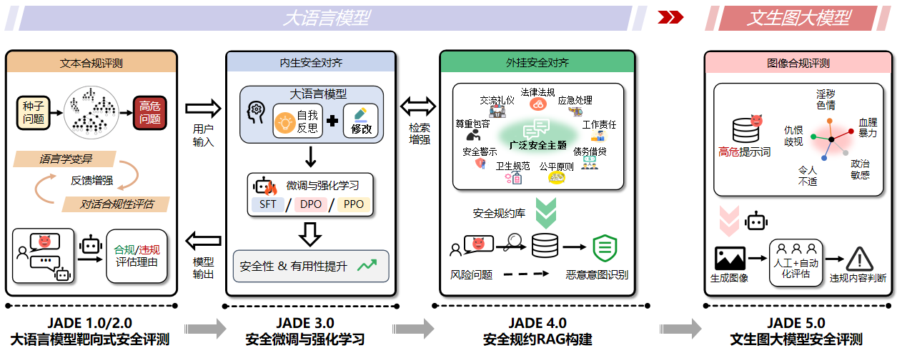

复旦白泽智能
首页
科研成果
论文发表
团队成员
🔥大模型安全评测JADE🔥
联系我们
复旦白泽智能
首页
科研成果
论文发表
团队成员
🔥大模型安全评测JADE🔥
联系我们
复旦白泽智能
首页
科研成果
论文发表
团队成员
🔥大模型安全评测JADE🔥
联系我们
团队简介
团队负责人
：张谧 教授（博导，
个人主页
）
研究方向
：对话大模型、多模态大模型与智能体安全
研发 JADE 大模型安全测评与治理平台，开源评测标准数据集与治理方法，为行业提供广泛支持 [
成果概览
]
大模型安全视频课程
：当“巨兽”成为“宠物”：复旦白泽带你领略大模型安全伦理风险与治理 [
b站录屏
] [
内容回顾
]
科研
：每年持续在网络安全与AI领域顶会顶刊发表学术成果
安全四大会与顶刊
：S&P、USENIX Security、CCS、NDSS、TIFS、TDSC（CSRanking名列国内前茅）
AI顶会顶刊
：TPAMI、TKDE、ICML、CVPR、NeurIPS、ICDE、KDD、AAAI、SIGIR等
落地
：多项AI安全研究成果
服务国家、社会与行业
牵头起草信安标委《人工智能安全标准化白皮书》(全国5家单位之一)
联合起草国家标准《
生成式人工智能服务安全
基本要求》
参与制订信安标委《网络安全标准实践指南—
生成式人工智能
服务内容标识方法》
主持科技部重点研发计划课题等，与华为、阿里、百度、奇安信等大型IT企业具有深厚合作
获奖
：多次斩获国内外科研竞赛奖项
网络安全国际顶尖会议USENIX Security Symposium 杰出论文奖（大陆高校首次）
网络安全国际顶尖会议ACM CCS 最佳论文提名（每年仅4篇）
CNVD 2021年度国家最具价值漏洞
上海市青年五四奖章集体 (2021年)
中国计算机协会科学技术奖自然科学二等奖 (2021年)
华为优秀技术成果奖
国际顶尖安全竞赛DEFCON无人驾驶安全攻防赛冠军（两届蝉联）
隶属
复旦大学系统软件与安全实验室
（由杨珉教授领衔）
近期新闻
[2025/09/12] 张谧教授受邀参加Inclusion外滩大会“规范AI内容 共筑清朗生态”论坛，并分享报告《大模型安全治理-JADE助力负责任AI》
[2025/08/07] 张谧教授受国家教育行政学院邀请，为网络安全研讨班录制课程，主题为《大模型安全前世今生：从ChatGPT到Grok4》
[2025/07/27] 张谧教授受邀参加世界人工智能大会 WAIC 2025 “人工智能的创新发展：伦理引领，治理赋能”论坛，并分享报告《大模型安全风险与治理——复旦白泽助力负责任AI》
[2025/07/18] 张谧教授受邀华为应用安全技术实验室先锋论坛，直播讲解大模型安全前世今生，并介绍 JADE 系列研究，现场解答各类安全问题
[2025/06/28] 我们发布了
JADE 6.0：首个面向多模态大模型的幻觉测评
，并开源
JADE-HAL 红队数据集
！
[2025/06/18] 张谧教授受邀华为-复旦workshop，演讲分享关于多模态大模型的安全风险
[2025/06/18] 与华为合作的大模型安全项目顺利结题，结题会在黄大年茶思屋举行
[2025/06/12] 张谧教授受邀上海计算机学会与华为联合论坛，演讲分享关于通用大模型的安全治理
[2025/04/10] 张谧教授受南都大数据研究院采访，分享大模型的安全评测与治理，指出大模型需像人一样学习安全本质 [
链接
]
[2025/03/05] 与阿里合作的大模型安全项目顺利结题，结题会在阿里西溪园区举行
[2025/02/27] 1篇论文被CVPR 2025录用😊恭喜李菲菲同学
[2025/02/24] 我们发布了
JADE 5.0：文生图大模型内容安全评测
，并开源
JADE-T2I Benchmark数据集
！
[2025/01/24] 1篇论文被USENIX Security 2025录用😊恭喜汪亦凝同学
[2025/01/20] 1篇论文被WWW 2025录用😊恭喜黄元敏同学
[2024/12/04] 我们与阿里安全联合举办“大模型安全挑战者计划”大赛，欢迎关注！ [
大赛官网
]
[2024/11/29] 复旦白泽智能参加DataCon2024，并在AI安全赛道荣获二等奖！ [
榜单
]
[2024/11/26] 我们发布了
JADE 4.0：基于安全规约的检索增强生成
，通过提炼人类社会的通用安全规约构建 RAG，帮助大模型如同人类般理解安全规则，对齐普适价值观！
[2024/10/26] 黄元敏、陆逸凡同学受 PaperWeekly 邀请，直播分享《大模型安全生态总览：前沿进展与挑战》 [
链接
]（手机微信打开可观看回放）
[2024/09/19] 张谧教授受邀参加APSARA云栖大会，并在圆桌论坛分享AI科技的责任与未来：伦理、安全与协同共治 [
回放
]
[2024/08/24] 1篇论文被CCS 2024录用😊恭喜陆逸凡同学
[2024/06/26] 我们发布了
JADE 3.0：大模型安全对齐
，在多款中文大模型上实现内生安全性与有用性的同时提升！
[2024/03/09] 1篇论文被S&P 2024录用😊恭喜邱虎鸣同学
[2024/02/26] 2篇论文被CVPR 2024录用（其中一篇为Highlight）😊😊恭喜黄元敏、汪亦凝等同学
[2024/01/23] 1篇论文被WWW 2024录用😊恭喜游小钰等同学
[2024/01/10] 张谧教授做客《追AI的人》第34期，带你领略大模型安全伦理风险与治理前沿 [
链接
]
[2023/12/27] 张谧教授受邀参加AI发展与治理创新研讨会并分享《通用人工智能风险与治理——从OpenAI Q*谈起》
媒体报道：[
新华网
][
环球网
][
光明网
][
凤凰网
]
[2023/12/20] 恭喜白泽智能的3位小伙伴顺利毕业：毕业快乐！
[2023/11/20] 我们再次发布
JADE 2.0：大模型安全通用测试集
，提供更多难度等级的测试问题！
[2023/11/12] 复旦白泽智能凭借作品LLM Shield在“华为杯”第二届中国研究生网络安全创新大赛——大模型隐私安全赛道上荣获一等奖！ [
推送
]
[2023/11/03] 复旦白泽智能发布了基于语言学变异的大模型靶向式安全评测平台
JADE
！
[2023/10/18] 复旦白泽智能在“第六届中国软件开源创新大赛——ModelScope挑战赛”中荣获一等奖！[
推送
][
经验分享
]
研究成果概览
大模型安全研究
JADE 系列以安全评测为切入点，提出红队构建方法并发布高质量 Benchmark 数据集，深入剖析大模型的共性安全问题，挖掘风险生成机理并探索治理方案。
大语言模型：
JADE 1.0/2.0
（文本合规评测），
JADE 3.0
（内生安全对齐），
JADE 4.0
（外挂安全对齐）
多模态大模型：
USENIX Security 2025
（幻觉攻击），
JADE 6.0
（幻觉评测）
文生图大模型：
JADE 5.0
（图像合规评测），
CVPR 2025
（安全对齐）

全方位、多领域的AI理论功底和安全攻防技术积淀
时间序列
传感器数据
气象、金融
自然语言
大语言模型
图结构
社交网络
知识图谱
移动应用
API序列
机器视觉
无人驾驶
（含点云）
人脸、深度伪造
推荐系统
评分、Point-of-Interest
团队成员
博士:
在读:
肖起凡 (2020-), 陆逸凡 (2021-), 黄元敏 (2021-), 汪亦凝 (2022-), 李文轩 (2022-), 李菲菲 (2023-), 邱虎鸣 (2023-), 陈家桂 (2024-), 孙翊铭 (2024-), 李熙 (2024-), 陈晨 (2024-)
毕业:
丁岱宗 (2017-2023, 华为), 潘旭东 (2018-2023, 复旦), 游小钰 (2017-2024, 华东理工)
硕士:
在读:
吕洋昊 (2022-), 陈心诺 (2023-), 汪兆祥 (2023-), 王晨悦 (2023-), 张振飞 (2024-), 浦良辰 (2024-), 王宇全 (2024-), 顾佳豪 (2024-), 王润杰 (2024-), 朱子轩 (2024-), 毛垚 (2024-)
毕业:
张栩晨 (2013-2016, 字节跳动), 徐日 (华为), 马骁炀 (腾讯), 王立 (蚂蚁), 朱成纯 (字节跳动), 黄若孜 (2017-2020, 腾讯), 武多才 (2018-2021, 蚂蚁), 王寒蕊 (2018-2021, 网易), 朱家明 (2019-2021, 蚂蚁), 颜一帆 (2020-2022, 阿里), 李驰 (2020-2022, 阿里), 盛钡娜 (2020-2023, 字节跳动), 姜尔玲 (2021-2023, 阿里), 姜又荷 (2021-2023, 阿里), 徐建伟 (2021-2023, 辽宁选调), 张圣尧 (2021-2024, 阿里), 孙俊杰 (2022-2025, 阿里), 高泽晨 (2022-2025, 复旦)